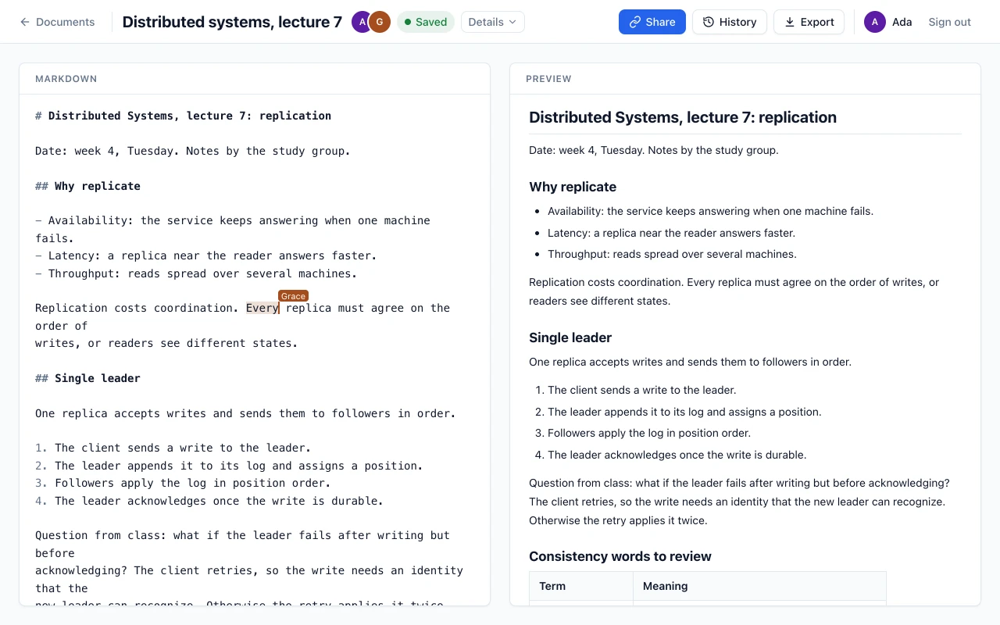
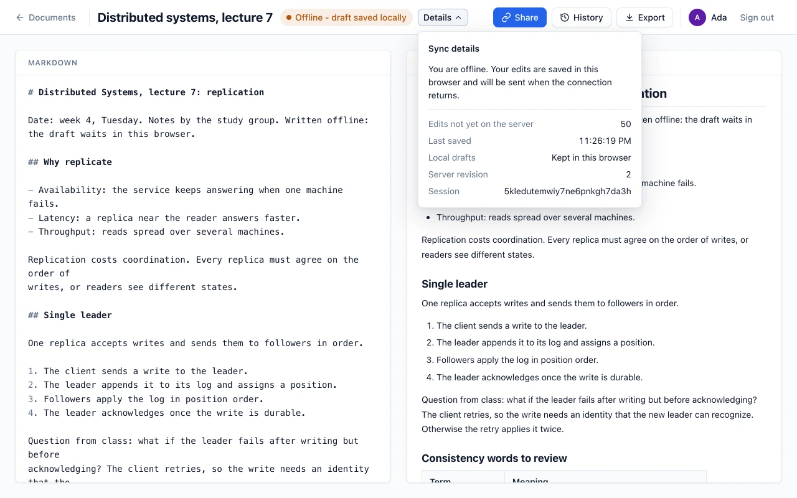
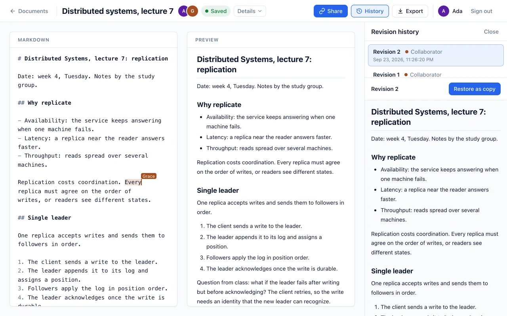
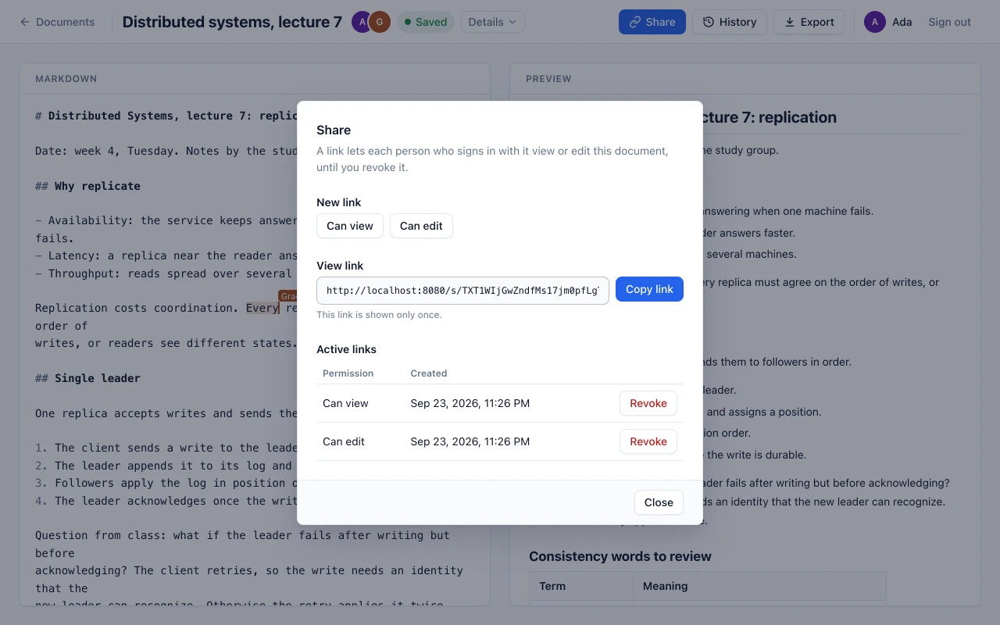
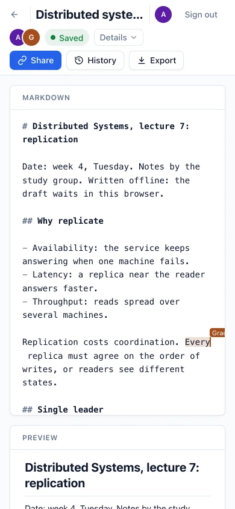

Collaborative Markdown editor
Write Markdown together, online or off.
CoDraft is for students and small teams. People write together in the browser, keep working through lost connections, reloads and server crashes, and never lose an edit the server has acknowledged.
A free public demo. Its server sleeps after 15 quiet minutes, so the first visit can take about a minute. Anyone can sign up, so don't store anything private.
- Go 1.27
- TypeScript
- React
- CodeMirror 6
- PostgreSQL 17
- WebSocket
- IndexedDB
- Docker

Try it in four steps
Two browser windows are enough, or send the link to a friend.
-
Create an account
Create an account with any email address and a password. The address is only your sign-in name: CoDraft sends no mail.
-
Start a document
Choose New document and write Markdown. The preview shows how it renders, and the status says when your edits are saved.
-
Write together
Choose Share, then Can edit, and Copy link. Open the link in another browser and sign in with a second account: both windows show each other's edits and cursors.
-
Go offline
Turn off the network and keep typing. The status changes to Offline - draft saved locally, and the edits are sent when the connection returns.
What it does
-
Real-time editing
Every change is a text operation, and the server puts a document's operations in one order. Each browser keeps one submission in flight and transforms incoming revisions against its pending edits, so every window reaches the same text.
-
Offline and reloads
A pending edit is stored in IndexedDB before it is sent. After a reload, a closed tab or a lost connection the draft comes back and is sent again, and the server never applies it twice. Past the recovery limits the draft is kept, to export or save as a new document.
-
Crash-safe saving
An edit is acknowledged and broadcast only after its PostgreSQL transaction commits. A restarted server rebuilds each document from its newest valid snapshot and the operations after it, and snapshots never delete history.
-
History and restore
Every revision is kept. Anyone who can view a document browses its history and previews a revision. The owner restores one as a new document, which never changes the original while others edit it.
-
Sharing links
The owner creates links that let a signed-in person view or edit. A new link is shown once, and revoking it removes every access granted through it and closes those sessions.
-
Presence and limits
Everyone sees who else is online and where their cursors are, and Sync details explain the saving state in words. Every server limit, from sessions per document to the operation rate, is enforced and tested at its boundary.
How an edit travels
Server-ordered operational transformation: one Go process orders each document's edits, and Go and TypeScript implement the same transformation rules, checked against shared test cases.
Browser
- React and CodeMirror 6
- TypeScript client, one submission in flight
- Drafts in IndexedDB, one per tab
submit, ack, revision
Go server
- A room per document orders its commits
- Transforms submissions against newer revisions
- Takes snapshots in the background
per commit
PostgreSQL 17
- Operation log and document heads
- Deduplication receipts
- Versioned snapshots
- The editor turns a keystroke into a text operation and applies it at once.
- The browser stores the pending edit in IndexedDB, then sends it with its client ID and sequence number.
- The document's room on the server transforms it against every revision committed since its base.
- One PostgreSQL transaction appends the operation, advances the document's head and records a deduplication receipt.
- Only after COMMIT does the server acknowledge the author and broadcast the revision to everyone else.
- The other browsers transform the revision against their own pending edits and apply it, so every window converges.
Offline, history and sharing




From desktop to phone
The layout stacks on narrow screens and keeps every action on screen. The sharing dialog and the sync details work from the keyboard, and the first page loads without the editor's code. Browser tests check the layout at 1440, 1024 and 390 pixels.
Verified
All four milestones of the roadmap pass their conformance gates, and GitHub Actions runs the product checks on every push.
- The last gate passes with 115 of 115 conformance results, from fixtures that the Go and TypeScript implementations share.
- A differential check compares the Go and TypeScript cores on 10,000 or more seeded cases, including surrogate pairs and invalid input.
- Every Go test also runs against a real PostgreSQL 17 database, with the race detector.
- Tests kill the server at every point of the submit path and restart it, and make PostgreSQL unreachable, stall it, or lose a COMMIT or its reply. No acknowledgment precedes a durable commit, and every edit is committed once.
- 21 browser tests in Google Chrome cover editing together, offline work, reloads, sharing, history, presence and a server crash at a commit boundary.
- The product also starts cleanly with Docker Compose, which CI checks on every push.
Measured
The benchmark suite runs Go protocol clients against the production server, on a laptop and on a GitHub-hosted runner. The free demo runs on a tenth of a CPU, and these figures do not describe it.
| Measure | Apple M5, 10 CPUs | GitHub runner, 2 CPUs |
|---|---|---|
| 20 people on one note: edit to acknowledgment, median and p99 | 6.7 and 26.5 ms | 6.5 and 26.9 ms |
| 20 people, each on their own note: p99 | 11.3 ms | 9.5 ms |
| Catching up after 1,000 missed revisions | 35 ms | 86 ms |
| Rebuilding 10,000 operations: full replay and from a snapshot | 445 and 42 ms | 1,362 and 122 ms |
| 20 people on a 250 KB document: median | 0.3 s | 2.2 s |
Clients, server and database ran on one machine over loopback, and each figure is the mean of three repetitions. On a 250 KB document every operation converts the whole text, which makes large documents the known weak spot. The figures describe these runs; they are not guarantees.